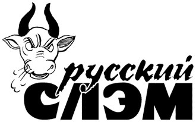

Участники
В турнире принимают участие поэты, выбранные Оргкомитетом. Участниками могут быть как мужчины, так и женщины. Заявки на участие принимаются по адресу slamrussian@pochtamt.ru или в книжном магазине клуба "Проект О.Г.И.". Заявка включает в себя данные о поэте (в произвольной форме), текст одного стихотворения (любого размера), характеристику поэтом своей манеры чтения стихов, координаты для контакта. Участие в турнире 2001-2002 года - бесплатное.
Под участием имеется в виду артистичное чтение собственных стихов на любом языке в одном либо в двух турах слэм-турнира. В течение одного сезона поэт может выступить не более чем в двух турнирах (и только в том случае, если не стал победителем в первом).
Участник может использовать в своем выступлении только предметы, находящиеся на сцене (стол, стулья, микрофон и т.д.). Участник не имеет права пользоваться принесенным с собой реквизитом, играть на музыкальных инструментах, использовать аудиозапись и пр.
Жюри в составе 5 человек выбирается ведущим из публики методом тыка. В жюри могут быть как мужчины, так и женщины. В жюри второго тура может быть не более двух членов жюри первого тура.
Турнир состоит из двух туров: первого и второго.
В первом туре участвуют 6-8 поэтов. Поэты выступают по очереди в соответствии с алфавитом. Каждый поэт читает стихи (одно или несколько) в течение 4 минут. Жюри выставляет поэтам оценки, согласно которым формируется турнирная таблица. Три поэта, набравших наибольшее число баллов, выходят во второй тур. В случае равенства баллов у двух или более поэтов, претендующих на выход во второй тур, фавориты определяются жребием.
Три поэта, выигравших первый тур, выступают по очереди в соответствии с алфавитом. Каждый поэт читает стихи (одно или несколько; другие, нежели в первом туре) в течение 5 минут. Жюри выставляет поэтам оценки, согласно которым формируется турнирная таблица. Поэт, набравший наибольшее число баллов, объявляется победителем турнира. В случае равенства баллов у двух или более поэтов, претендующих на победу, учитываются баллы, набранные участниками в первом туре. В случае равенства этого показателя победителями турнира объявляются 2 либо 3 участника.
Проводится по схеме обычного турнира, в два тура. Победители пяти слэм-турниров имеют право участвовать в суперфинале. Если победитель турнира отказывается, оргкомитет оставляет за собой право пригласить для участие в суперфинале поэта, занявшего второе место в своем турнире. От турнира, в котором объявлено более одного победителя, для участия в суперфинале приглашаются все победители.
Каждый из 5 членов жюри выставляет каждому из выступающих 2 оценки: за артистизм исполнения и за содержание. Оценки выставляются по 5-балльной системе: 1, 2, 3, 4 или 5. Оценка 0 невозможна! Член жюри обязан выставить оценку по обеим номинациям всем без исключения участникам. Крайние оценки (низшая и высшая) по обеим номинациям отбрасываются, остальные шесть оценок суммируются и полученный итог является основанием для определения победителей.
(Пример. Участник получил за артистизм оценки 3, 3, 3, 4 и 5. Одна из троек, как низшая, и пятерка, как высшая, отбрасываются: суммируются 3, 3 и 4. За содержание он получил 2, 3, 3, 5 и 5. Двойка как низшая и одна из пятерок как высшая оценки отбрасываются: суммируются 3, 3 и 5. Общая сумма: 21 балл.)
Участник слэм-турнира не имеет права выступать в одном туре более четырех минут. В случае если участник превышает норму, ему начисляются штрафные очки ("пенальти") - в сумме 1 балла за первую начатую просроченную минуту, 3 балла за вторую начатую просроченную минуту, 5 балла за третью начатую просроченную минуту. Если участник выступает более 7 минут, он снимается с соревнования.
В каждом турнире все участники, вышедшие во второй тур, получают в качестве приза сувениры. Победитель турнира получает приз 100$.
Победитель суперфинала получает 500$. Участники второго тура суперфинала получают по 100$.
Если победителей турнира или суперфинала больше одного, призовой фонд делится на всех победителей.
Публика не имеет права физически воздействовать на поэта (бить, целовать, плеваться и пр.). Публика имеет право поддерживать или освистывать поэта со своего места с любой степенью активности. Однако если поведение кого-то из публики покажется Ведущему некорректным, Ведущий имеет право удалить некорректного зрителя из зала.
Оргкомитет "Русского слэма" 2001-2002 состоит из Вячеслава Курицына, Николая Охотина и Ильи Фальковского.